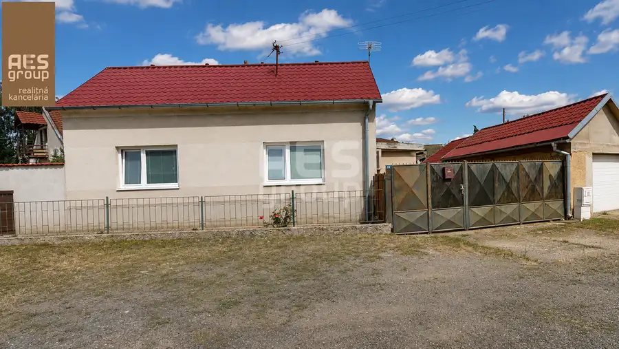
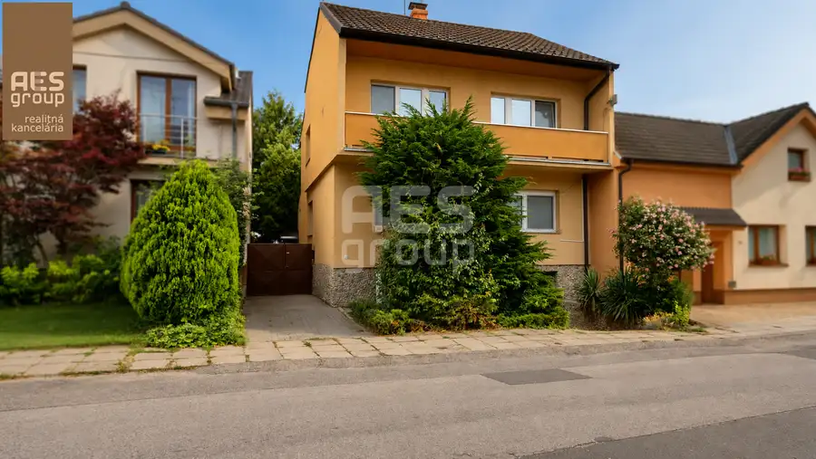
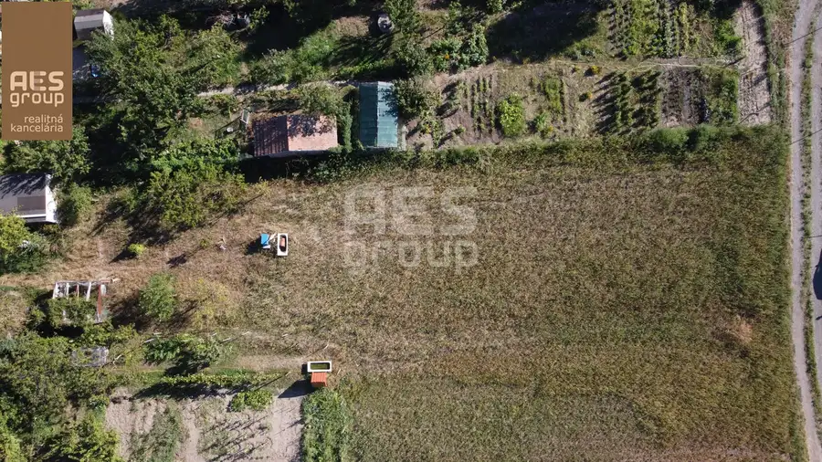

Predaj, pozemok 674 m2, Borinka
Borinka
- Plocha674 m²
- VlastníctvoOsobné
O nehnuteľnosti
Ponúkame Vám na predaj slnečný stavebný pozemok v tichej lokalite v obci Borinka.Rovinatý pozemok o výmere 674 m2 sa nachádza v centre obce Borinka na úpätí Malých Karpát so skvelým prístupom a všetkou občianskou vybavenosťou.Rozmer pozemku cca.: šírka: 25 m a dĺžka 29 m.Pozemok sa nachádza v intraviláne obce, s možnosťou vybudovania rodinného domu s dvoma nadzemnými a jedným podzemným podlažím pri 30 % zastavanosti. Kompletnú UPI na vyžiadanie v RK.Všetky inžinierske siete v tesnej blízkosti.Cena: 179.000 ,- EURV prípade záujmu o bližšie informácie prípadne o termín obhliadky nás neváhajte kontaktovať telefonicky na 0907 784 562, alebo mailom tibor@aesgroup.skAES GROUP – realitná kancelária. Špičkový servis pri predaji, kúpe a prenájme nehnuteľností.
Parametre
| Druh | Pozemok pre rodinné domy |
|---|---|
| Dátum zverejnenia | 8. 6. 2026 |
| Plocha pozemku | 674 m² |
| Typ | Predaj |
| Vlastníctvo | Osobné |
Kde to je


Mohlo by Vás zaujímať

DomNové10 180 000 €PREDAJ, Rodinný dom s garážou, Bílovec, Plavecký Štvrtok Plavecký Štvrtok 91 m² Ponúkame Vám na predaj rodinný dom s pekným slnečným pozemkom v stabilizovanom území v obkopaní rodinných domov v centre obce Plavecký Štvrtok.Dom s…
DomNové10 390 000 €PREDAJ, Rodinný dom s pozemkom, ul. Záhumenská, Stupava Stupava 161.4 m² Ponúkame Vám na predaj 5 izbový rodinný dom s veľkorysou výmerou v stabilizovanom území v obklopení rodinných domov na Záhumenskej ul. v Stupave.Dom…
PozemokNové5 222 000 €Predaj, pozemok 600 m2, Stupava Stupava 600 m² Ponúkame Vám na predaj slnečný stavebný pozemok v tichej a vyhľadávanej lokalite v Stupave časť Mást.Rovinatý pozemok o výmere 600 m2 sa nachádza v…